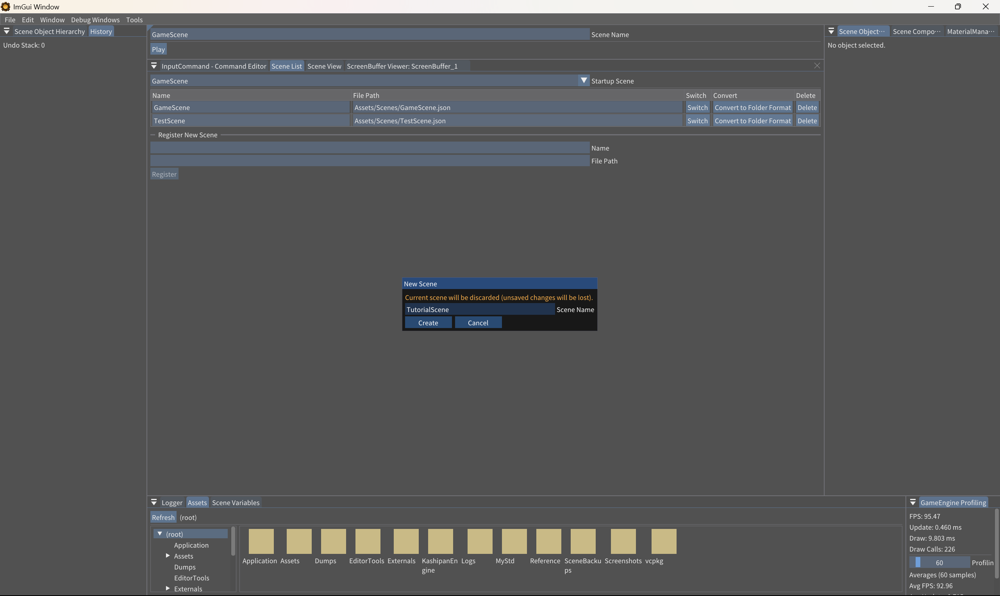

1. シーンを作成する
上部のFileメニューから、チュートリアル用の空シーンを作成します。
新しいシーンを作る
- New Sceneを開く上部メニューバーから File›New Scene... を選択します。
- シーン名を入力する表示されたNew Sceneダイアログの
Scene NameにTutorialSceneと入力します。 - Createを押す現在の編集内容を破棄してよいか確認してから
Createを押します。Scene EditorのScene Nameが変われば作成成功です。

編集中のシーンに未保存の変更がある場合
新しいシーンを作る前に File›Save Scene... で保存してください。New Sceneは現在の編集対象を新しい空シーンへ置き換えます。
新しいシーンを作る前に File›Save Scene... で保存してください。New Sceneは現在の編集対象を新しい空シーンへ置き換えます。
最初の保存
File›Save Scene... を開き、Assets/Scenes/TutorialScene.scene を指定して保存します。今後は Ctrl+S で同じ場所へ保存できます。
- Scene EditorのScene Nameが
TutorialSceneになっている - Scene Viewに空のグリッドが表示されている
- Scene Object Hierarchyにゲーム用オブジェクトがまだない
保存されるデータ
Assets/Scenes/TutorialScene.scene/
├── scene.json
└── Objects/ ← オブジェクトを追加すると作られる
└── <UUID>/object.jsonscene.jsonにはシーン名、シーンID、シーンコンポーネント、シーン変数が保存されます。オブジェクトはUUIDごとに別ファイルとなるため、複数人で編集するときも変更が衝突しにくい構成です。
旧単一JSON形式
Assets/Scenes/GameScene.jsonのような旧形式も読み込めますが、新規制作ではフォルダー形式の*.sceneを使います。既存JSONはScene ListのConvert to Folder Formatで変換できます。
シーンの内部構造と対応APIはシーンのリファレンスを参照してください。